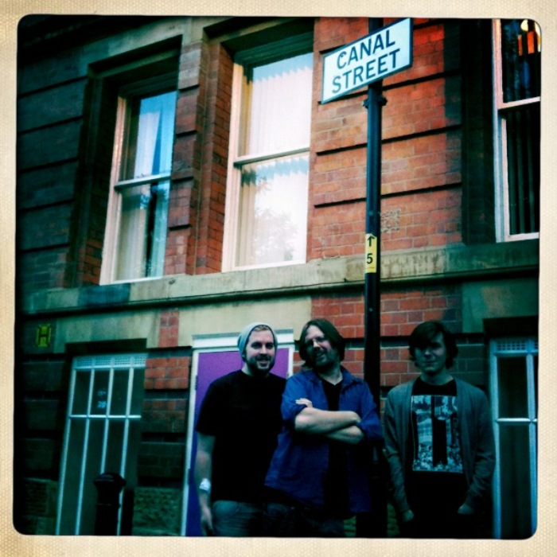

Monday the 28th of May 2012 will see the announcement of the new judging panel for the Green Carnation Prize 2012. Before that however, we wanted to take a moment to bid a fond farewell and thank you to two of the co-founders, Paul Magrs and Nick Campbell, who also judged the prize over the last two years.
Simon Savidge, a fellow co-founder of the prize, said “After a wonderful two years both Paul and Nick decided, earlier in the year, that with other exciting and time consuming projects forthcoming they couldn’t be as big a part of the prize in 2012. They will, I hope, still be keeping an eye on, and hand in, the prize behind the scenes one way or another. I want to thank them both so much for all the time, energy and passion that they have put into the prize over the last two years. We wouldn’t have a prize without them. I will miss working with them this year but will be looking forward to following and supporting their future projects.”

The Green Carnation Co-Founders; Simon Savidge, Paul Magrs & Nick Campbell
For more on the history of the prize and how it all came around you can visit the all new ‘About’ page.